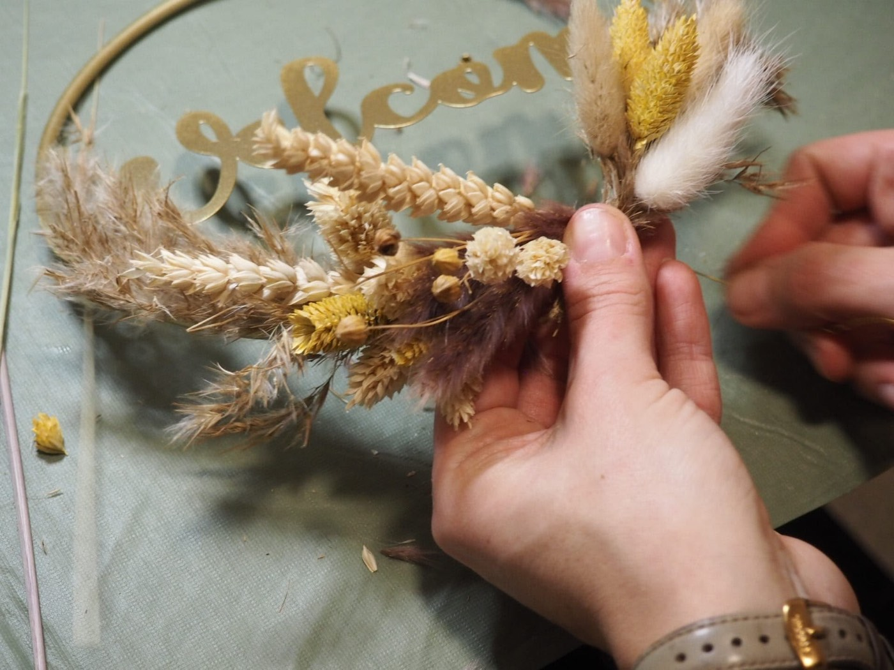
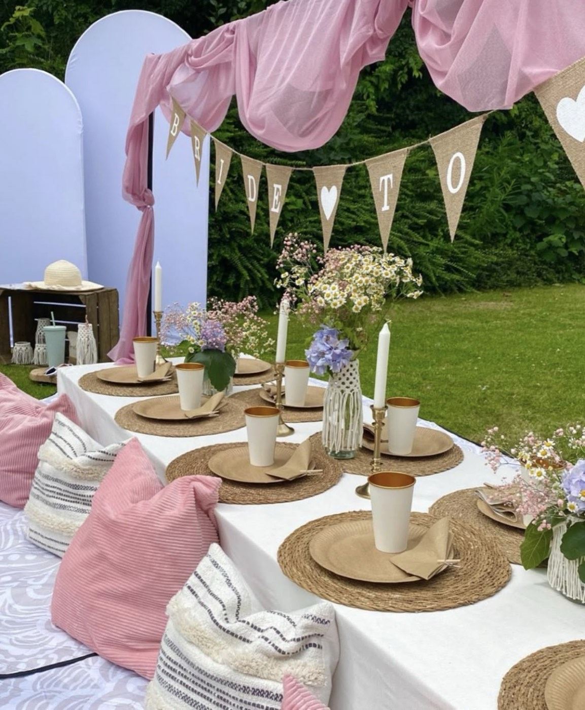

Ca. 3 Stunden
Ausreichend Zeit, um in entspannter Atmosphäre kreativ zu werden — Schritt für Schritt begleitet durch den gesamten Workshop.
Kreativität, Inspiration und wunderschöne Fotomomente — gestalte dein eigenes Trockenblumen-Kunstwerk, gemeinsam mit Freunden, Familie oder Kollegen.
Unser Rundum-sorglos-Paket — du bringst nur gute Laune mit, den Rest übernehmen wir.
Ausreichend Zeit, um in entspannter Atmosphäre kreativ zu werden — Schritt für Schritt begleitet durch den gesamten Workshop.
Inklusive aller benötigten Materialien für die Gestaltung eines modernen Trockenblumen-Hoops. Verschiedene Trockenblumen, Gräser und Dekoelemente stehen zur Auswahl.
Sorge für eine angenehme und gemütliche Atmosphäre — so kannst du dich ganz auf deine Kreativität konzentrieren und eine inspirierende Auszeit genießen.
Die Workshops eignen sich sowohl für Einzelpersonen als auch für Gruppen, Freundeskreise, Junggesellinnenabschiede, Geburtstage oder Firmenevents. Während des Workshops begleiten wir dich Schritt für Schritt und geben wertvolle Tipps rund um die Gestaltung mit Trockenblumen.
Die Workshops finden in den stilvollen Räumlichkeiten von Deko Perle in der Alte Freiheit 3 in Wuppertal statt — zentral gelegen und gut erreichbar erwartet dich eine kreative Umgebung voller Trockenblumen, schöner Dekorationen und zahlreicher Möglichkeiten für unvergessliche Erinnerungsfotos.
Wir freuen uns darauf, gemeinsam mit dir einzigartige Trockenblumen-Dekorationen zu gestalten und einen kreativen Nachmittag voller Inspiration zu erleben.
Du liebst Trockenblumen, kreative DIY-Projekte und besondere Erlebnisse mit Freunden, Familie oder Kollegen? Dann sind die Workshops Trockenblumen bei Deko Perle genau das Richtige für dich. In einer entspannten und inspirierenden Atmosphäre entstehen aus hochwertigen Trockenblumen einzigartige Dekorationen, die nicht nur lange Freude bereiten, sondern auch echte Hingucker für dein Zuhause sind.
Unsere Trockenblumen-Workshops verbinden Kreativität, Design und gemeinsame Erlebnisse. Ob moderne Trockenblumenkränze, stilvolle Dekoringe, saisonale Arrangements oder individuelle Wohnaccessoires — jeder Workshop bietet die Möglichkeit, ein persönliches Lieblingsstück zu gestalten.
Trockenblumen sind längst mehr als ein kurzlebiger Trend. Sie stehen für Natürlichkeit, Nachhaltigkeit und zeitlose Schönheit. In unseren Workshops lernst du verschiedene Techniken kennen und erfährst, wie unterschiedliche Trockenblumen, Gräser und Naturmaterialien harmonisch miteinander kombiniert werden können.


Ein Trockenblumen-Workshop bietet die perfekte Gelegenheit, dem Alltag zu entfliehen und etwas mit den eigenen Händen zu erschaffen. Kreative Tätigkeiten fördern die Entspannung, regen die Fantasie an und schaffen besondere Erinnerungen — und entstehen doch wunderschöne Dekorationen, die dein Zuhause verschönern oder sich hervorragend als persönliches Geschenk eignen.
Unsere Workshops richten sich an Anfänger und an kreative Köpfe mit Erfahrung. Vorkenntnisse sind nicht erforderlich, jeder Teilnehmer wird Schritt für Schritt begleitet. Es gibt keine festen Vorgaben und keine perfekten Ergebnisse — jedes Werkstück wird zu einem einzigartigen Unikat.
Von zarten Naturtönen über romantische Pastellfarben bis hin zu modernen Boho- und Vintage-Designs — wir arbeiten mit einer großen Auswahl hochwertiger Materialien:
Durch die Kombination unterschiedlicher Formen, Farben und Strukturen entstehen beeindruckende Arrangements mit besonderem Charakter. Jede Dekoration wird individuell zusammengestellt und spiegelt die Persönlichkeit des Teilnehmers wider.
Die liebevoll dekorierte Umgebung, die farbenfrohen Trockenblumen und die fertigen Werkstücke schaffen eine einzigartige Kulisse für Erinnerungsbilder. Gerade bei Junggesellinnenabschieden, Geburtstagsfeiern oder Freundinnen-Events entstehen viele besondere Momente, die gerne fotografisch festgehalten werden.


Ob mit dem Brautteam, den Kollegen oder der Freundesrunde — das gemeinsame Gestalten sorgt für eine besondere Atmosphäre und macht jedes Treffen unvergesslich.
Junggesellinnenabschiede: Gemeinsam entstehen individuelle Trockenblumenkränze, Haarkränze oder dekorative Erinnerungsstücke — viel Raum für Gespräche, Lachen und kreative Auszeiten, mit einer traumhaften Kulisse für viele Fotomöglichkeiten.
Kreative Teamevents: Für Unternehmen eine schöne Möglichkeit, den Teamgeist zu fördern. Das gemeinsame Gestalten stärkt die Kommunikation und schafft positive Erlebnisse — die fertigen Dekorationen können mit nach Hause genommen werden.
Geburtstage & Freundinnen-Abende: Ob Geburtstagsfeier, Babyparty, Familienfeier oder kreativer Abend mit Freunden — es entstehen nicht nur einzigartige Werkstücke, sondern auch wertvolle gemeinsame Erinnerungen.
Trockenblumen überzeugen nicht nur durch ihre Schönheit, sondern auch durch ihre Langlebigkeit. Im Gegensatz zu frischen Blumen behalten sie über viele Monate oder sogar Jahre ihre dekorative Wirkung. Sie benötigen weder Wasser noch besondere Pflege und können immer wieder neu arrangiert werden — ein nachhaltiges Statement für stilvolle und langlebige Wohnaccessoires.
Ob Junggesellinnenabschied, Geburtstag, Firmenevent oder kreative Auszeit — bei Deko Perle erwarten dich inspirierende Workshops, hochwertige Materialien, persönliche Betreuung und eine Atmosphäre voller Kreativität.